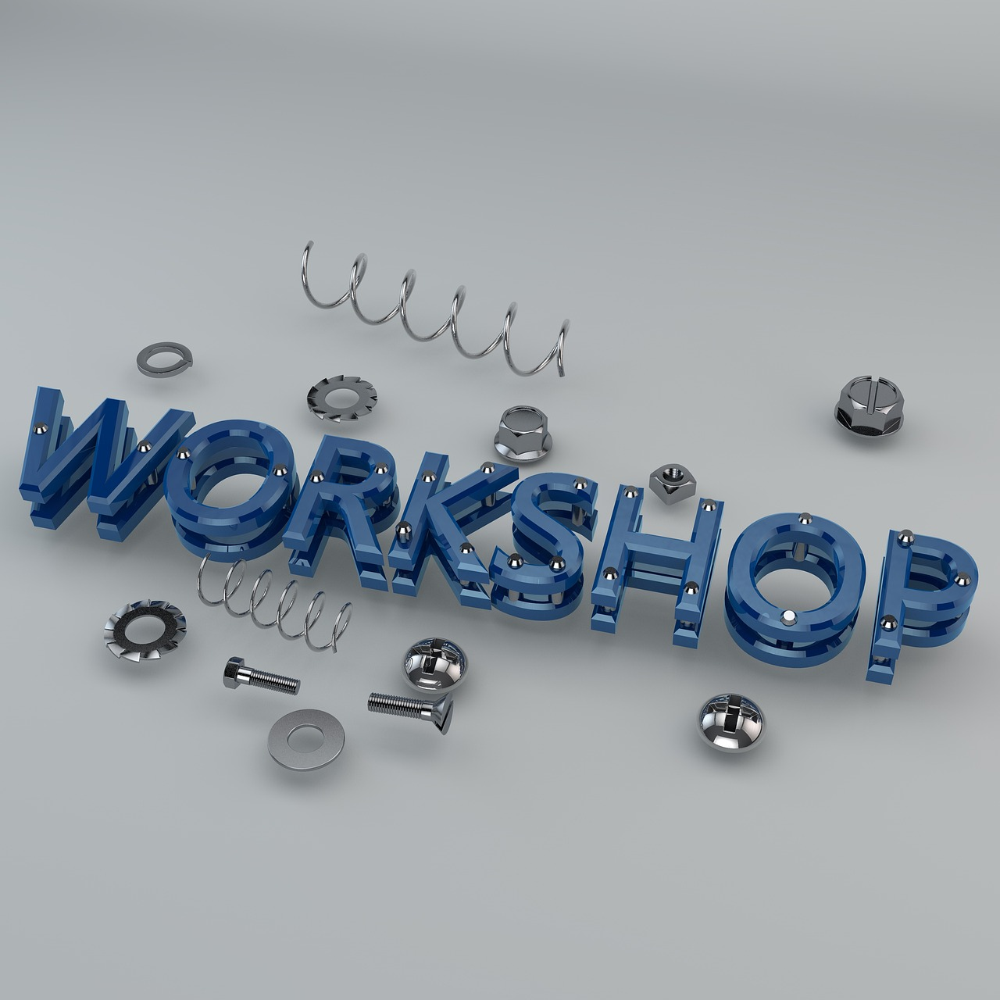

Early years
Foundational guidance for curiosity, confidence, communication and social learning.
Guidance across life stages
EII helps learners, families and institutions turn interests, strengths and responsibilities into practical next steps, with guidance that is age-appropriate, evidence-informed and careful with personal data.

Learner stages
Each stage has a different decision horizon. The work is structured so learners are not pushed too early, but are never left without direction when choices start to matter.
Foundational guidance for curiosity, confidence, communication and social learning.
Activities that help children connect school subjects with interests, strengths and future possibilities.
Support for subject choices, study pathways, employability skills and transition planning.
Guidance for career change, upskilling, professional transitions and lifelong learning.
Guidance governance
EII guidance programmes focus on self-awareness, opportunity awareness, decision-making and transition skills, with proportionate GDPR-aware handling of learner information.

Institutional support
Age-specific activities, reflection prompts, pathway maps and decision tools that staff can use consistently.
Shared language and practical resources for teachers, parents and guardians supporting learner choices.
Clear handling of sensitive learner context, consent expectations, access boundaries and record-keeping instructions.
Work with EII
Contact the team to discuss guidance programmes, professional development or institutional support across any age group.